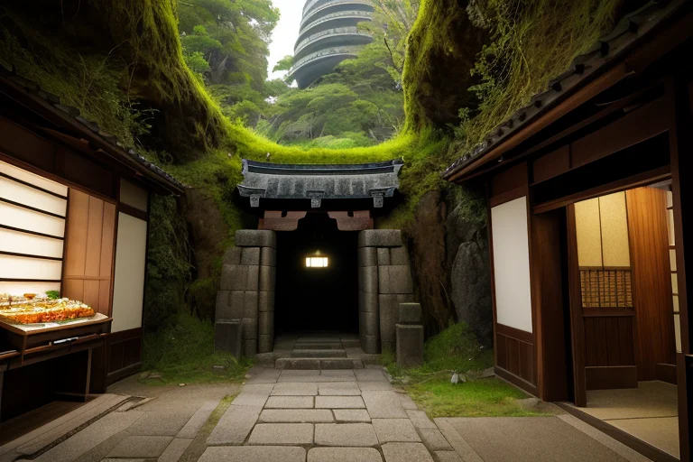
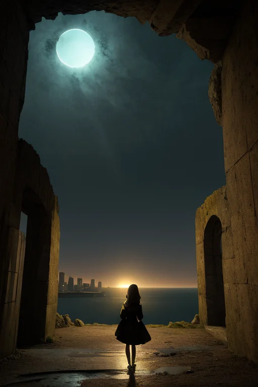
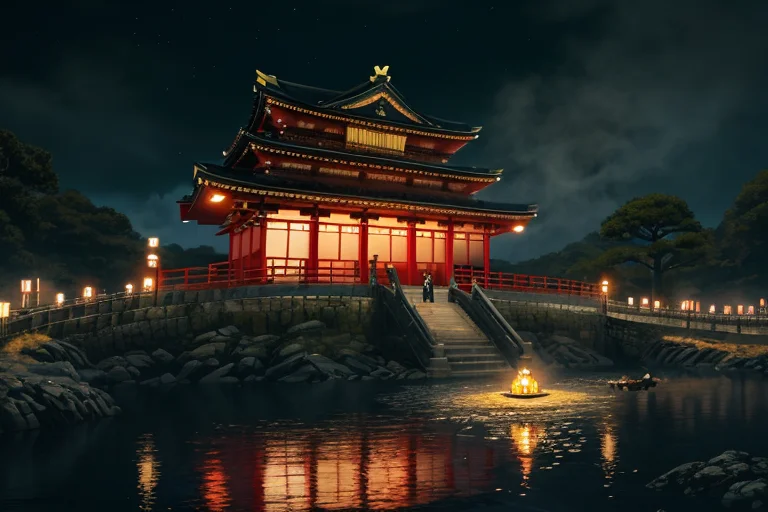
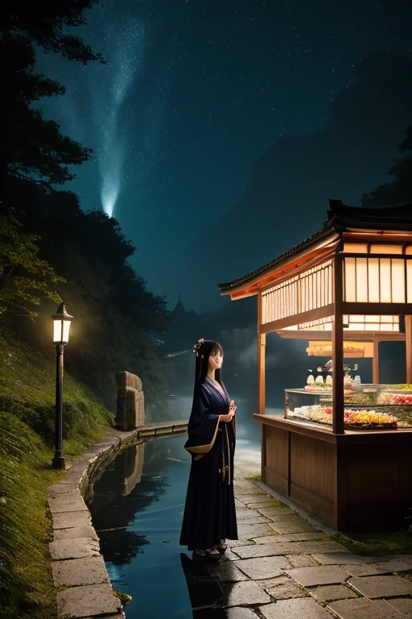
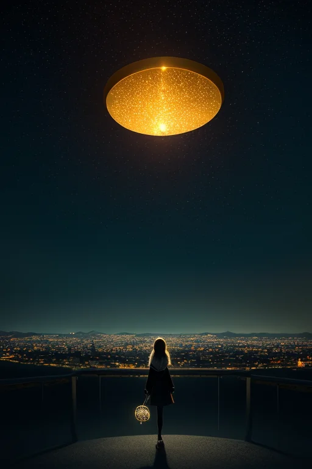

第一章 現実の福岡
あなたはまだ気づいていない。この土地にも、王がいることを。
太宰府天満宮の参道は、平日の午後でも人で埋まっていた。梅の季節は過ぎ、新緑が境内を覆い始めていた。参拝客は願い事を胸に、ゆっくりと本殿へと向かう。その足元の深く、古代政庁の礎石が眠る地層では、微かな歪みが蓄積されていた。誰も感じない、日常の下で進行する地殻の軋み。それは、外の海から押し寄せた二度の元寇の波のように、確実に、しかし目に見えない形でこの地を圧迫していた。
福岡タワーが博多湾の光を反射させるその時も、中洲の屋台で一杯のラーメンが啜られるその時も、歪みは進行する。王はそれを知っている。歪みを消すことはできない。ただ、調整することだけが許されている。玄関口であるこの地は、常に外からの衝撃に晒され、内なるエネルギーを封じ込めてきた。黒と金の紋章は、開かれることのない門扉のように、静かに土地の深部で輝いている。
外へ出る覚悟はあるか？ その問いは、歪みそのもののように、この土地の基底を流れていた。

第二章 歪みの兆候
門司港レトロのレンガ造りの倉庫群が、夕闇にシルエットを刻む。潮風が運ぶのは、海峡を隔てた向こうの気配だ。玄関王フクオカリア・ゲートウェイは、旧門司三井倶楽部のバルコニーに立ち、目を閉じる。掌に浮かぶ黒と金の紋章が、微かに軋む。これは、単なる潮風ではない。歪みの波紋だ。
「ゲートリア、報告を。」
「はい。志賀島沖の海底プレートに、予測を超える圧力が蓄積されています。通常の調整範囲を逸脱する兆候。これは……『門』そのものの劣化です。」
主席妖精の声は、いつになく硬い。この地は古代より、外からの侵攻と内なる膨張を、巨大な「門」の封印で調整・抑制してきた。元寇の神風も、その封印の一形態に過ぎない。しかし今、その封印が、内側から押し破られようとしている。
外へ出たいという、土地そのものの野望。それは歪みとなり、微細な地震を生み、博多の地下街を歩く人々の足を、ほんの一瞬、躓かせる。王はその全てを感知する。封じ込められてきた膨大なエネルギーが、目覚めの時を待ち侘びている。外へ出る覚悟は、この地にあるのか。それとも、それは破滅への扉なのか。

第三章 王の葛藤
太宰府天満宮の梅が、一輪、早く散った。王はその花弁を掌に受け止め、その重みを測った。それは歪みの予兆だった。門司港レトロの静かな波打ち際で、彼は己の内なる「門」と対峙する。封印は完全ではない。志賀島の潮風に混じり、かすかに「外」の匂いがする。それはかつて元寇の船団が運んできた、未知と衝突の予感そのものだ。
中洲の屋台の喧噪は、人々の無意識の「外へ」という欲望の表れだ。彼らは博多ラーメンの熱気にもつ鍋の濃厚さに、満たされながらも、何かを求め続ける。王はその欲望の奔流を、百年単位で微調整してきた。しかし今、調整では抑えきれない。彼自身の内側から、黒と金の紋章が灼熱のように疼く。挑戦輪が回転を始め、封じた門扉が軋む。
「解放せよ」という声は、土地の記憶であり、彼自身の進化した感情だった。だが、覚悟とは何か。それは破壊を伴う。ゲートリアの焦燥、ハカタリアのためらい。全ては彼の内なる葛藤の反映である。彼はただ、次の歪みが来るまで、沈黙して門の前に立ち続けた。

第四章 妖精との対話
太宰府天満宮の静寂の中、梅の古木の下で、ゲートリアが語り始めた。声は、通り過ぎる風のようだった。「私たちは、流れを整える者です。人が集い、交わり、去っていくそのリズムを。でも、王よ、あなたが感じている『開けよ』という衝動は、調整の域を超えています」
ハカタリアが、舗石に触れる指を止めた。「かつて二度、外からの巨大な歪みがこの地を襲いました。元寇です。その衝撃は、この土地の『門』の性質を変えました。開くことは、侵されることでもある。だから、自らを『封印線』に定めたのです。開かずの門として、内側の熱を保ちながら」
王は、中洲の川面に揺れるネオンの光を思い浮かべた。屋台の熱気、博多ラーメンの湯気、山笠の喧騒。全ては内にこもる熱だった。「開くことは、この日常を危険に晒すことか」
「そうかもしれません」ゲートリアは黒と金の衣を翻した。「しかし、歪みは外からばかりではありません。内に蓄積した野心と挑戦心そのものが、新たな歪みなのです。あなたの疼きは、その証です。覚悟とは、この内側の圧力を、外へ向けること。あるいは、自らを壊すこと」

第五章 微調整と余韻
玄関王は、志賀島の海を見下ろす断崖に立った。門司港の灯りが遠く、水平線は闇に溶けていた。彼は両手を広げ、黒と金の紋章が空中に浮かび上がる。歪みの修復は、力の押し付けではない。膨張した内圧を、ほんの少し、別の形に変える微調整だ。
彼は、太宰府天満宮の梅の木に、一輪早く花を咲かせる意志を送った。中洲の屋台で、今夜だけ客同士の会話が少し深まるよう、偶然を整えた。福岡タワーの展望室から、一人の青年が決意を固めて帰る未来の、風向きを変えた。全ては些細な、誰にも気付かれない調整。膨大な野心のエネルギーを、巨大な一撃ではなく、無数の小さな「開く」に分散させていく作業だった。
ゲートリアが傍らに現れ、静かに言った。「封印は保たれます。しかし、これは延期に過ぎません。疼きは消えていません」
「ああ」王は答えた。彼の胸には、微かに、疼きが残っていた。外へ出る覚悟とは、この疼きと共に生き、時にそれを微調整という形で解き放つことなのかもしれない。彼はまだ、答えを持っていなかった。ただ、今夜もこの町は、ほんの少しだけ、彼の調整によって息をしている。
水平線の向こうから、ごくかすかな風が吹いてきた。
あなたの町にも、王がいる。